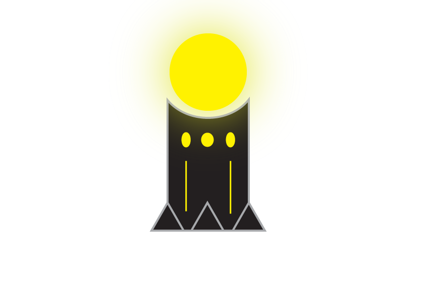
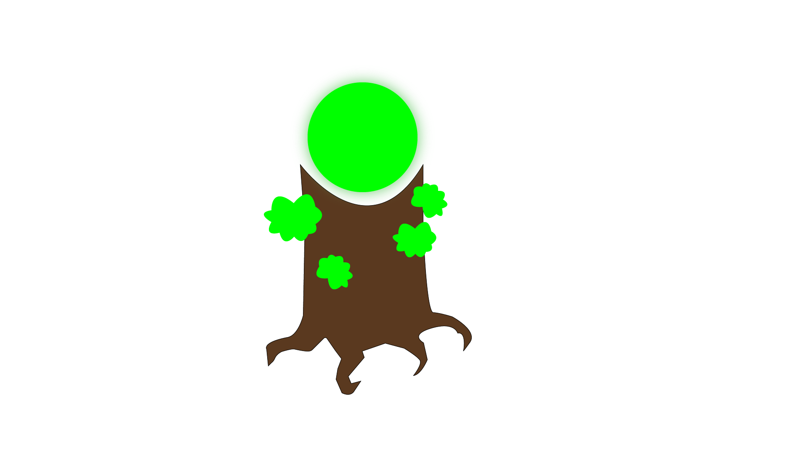
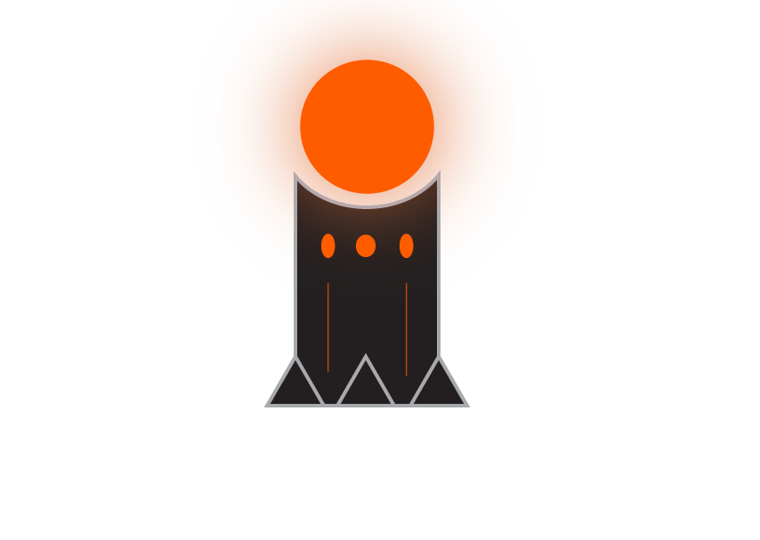
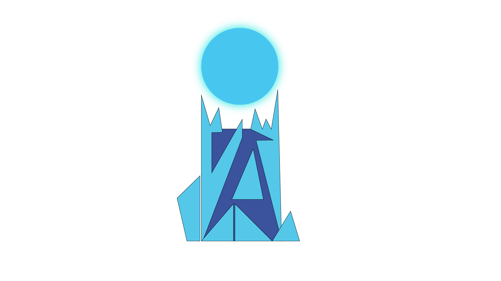
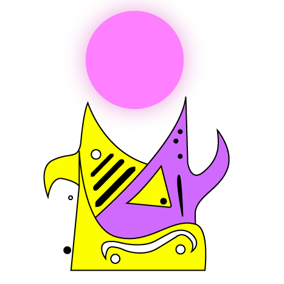
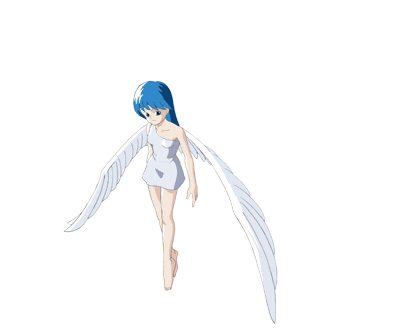

Lumia (Lumière / Classique)

Cette tour utilise l’énergie de l’entité de la lumière pour éliminer les ennemis. Elles sont assez répandues et communes dans la région. Elle ne provoquent pas beaucoup de dégâts mais sont faciles à construire.
Gaïa (Terre)

Cette tour est reliée à l’entité végétale de l’astre sur laquelle elle se situe. Elle concentre l’énergie présente dans le sol pour la transmuter en une force propre à la planète et inflige de nombreux dégâts à ses ennemis.
Magmus (Feu)

Cette tour reliée à l’entité volcanique de la planète. Colérique et puissante, elle concentre l’énergie du magma et provoque des dégâts considérables.
Figen (Glace/eau)

Cette tour est reliée à l’entité de l’eau. Elle se caractérise par l’énergie de la glace et de l’eau liquide qu’elle concentre. Elle permet de ralentir considérablement les ennemis.
Tackyon (Energie mystique)

Cette tour mystique utilise une source d’énergie invisible et bien plus puissante que tous les éléments connus. L’énergie Tackyon représente la source même de la matière et de la vie. Cette tour la transmute, la condense et déploie alors une force d’attaque phénoménale dans ses rayons cosmiques.
Archange Michel (Bonus)

Prince des Archanges, Archange du Premier Rayon, Défenseur de la Foi, Prince de tous les gardiens defenseurs, chef des forces de la Trippy Univers, de la milice céleste, champion du Bien. L’ange Michael est toujours le grand vainqueur du bien, lorsqu’il s’agit de livrer une bataille contre le mal.